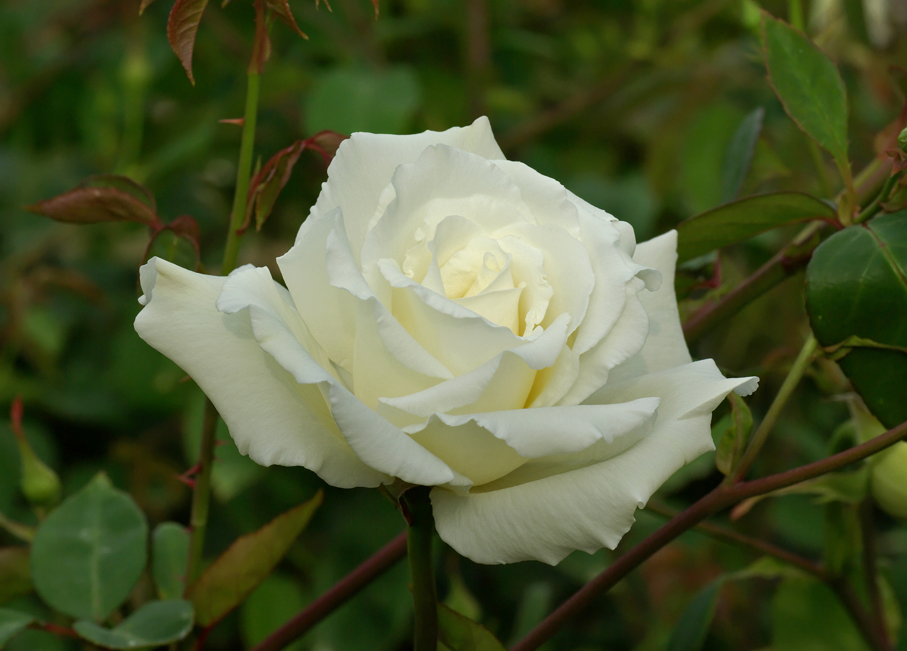

薔薇

バラ（薔薇）は、バラ科バラ属の総称である[1][2][3]。あるいは、
そのうち特に園芸種（園芸バラ・栽培バラ）を総称する[1]（花が鑑賞用や食用とされる[4] ）。
本項では、後者の園芸バラ・栽培バラを扱うこととする。
バラ属の成形は、低木（灌木）、または木本性のつる植物で、葉や茎に棘を持つものが多い。
葉は1回奇数羽状複葉。花は5枚の花びらと多数の雄蘂を持つ（ただし、園芸種では大部分が八重咲きである）。
北半球の温帯域に広く自生しているが、チベット周辺、中国雲南省からミャンマーにかけてが主産地で、
ここから中近東、ヨーロッパへ、また極東から北アメリカへと伝播した。南半球にはバラは自生しない。
(引用:wikipedia url:
https://ja.wikipedia.org/wiki/%E3%83%90%E3%83%A9
)